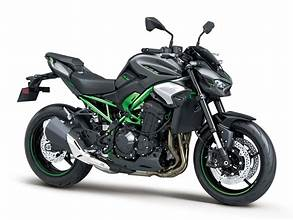

1885 წელს გერმანიაში გოტლიბ დაიმლერისა და ვილჰელმ მაიბახის მიერ წარმოებული Daimler Reitwagen იყო პირველი შიდა წვის ძრავიანი ნავთობის საწვავით მოტოციკლი. 1894 წელს, Hildebrand & Wolfmüller გახდა პირველი სერიული წარმოების მოტოციკლი. [ 4 ] [ 5 ]